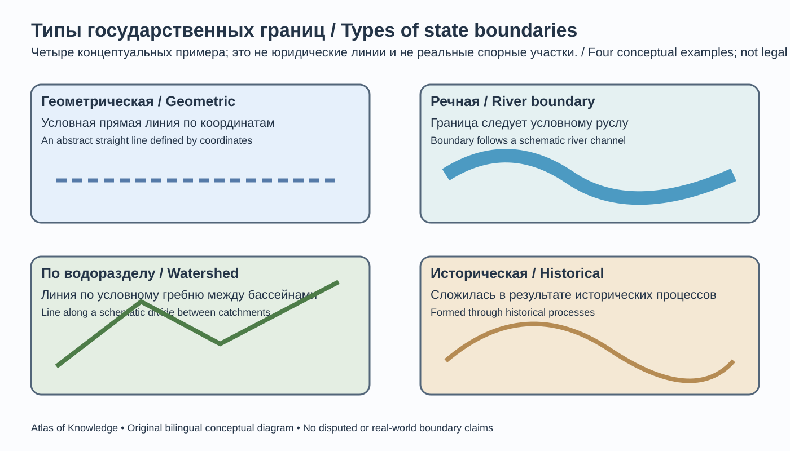
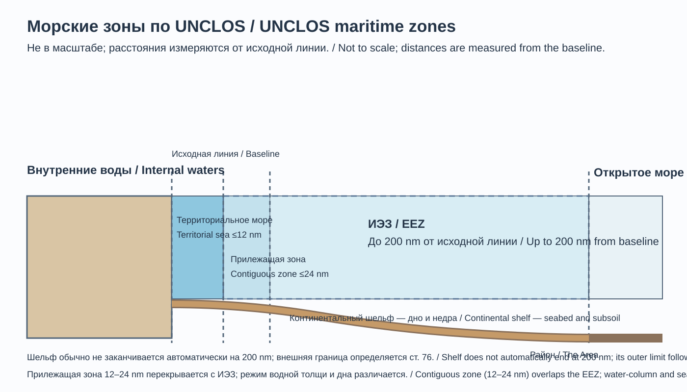
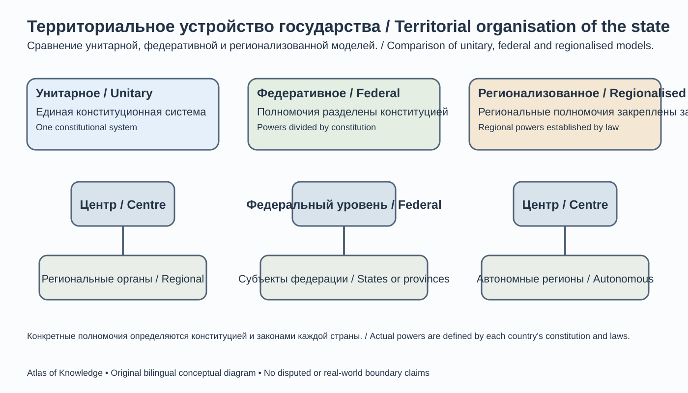
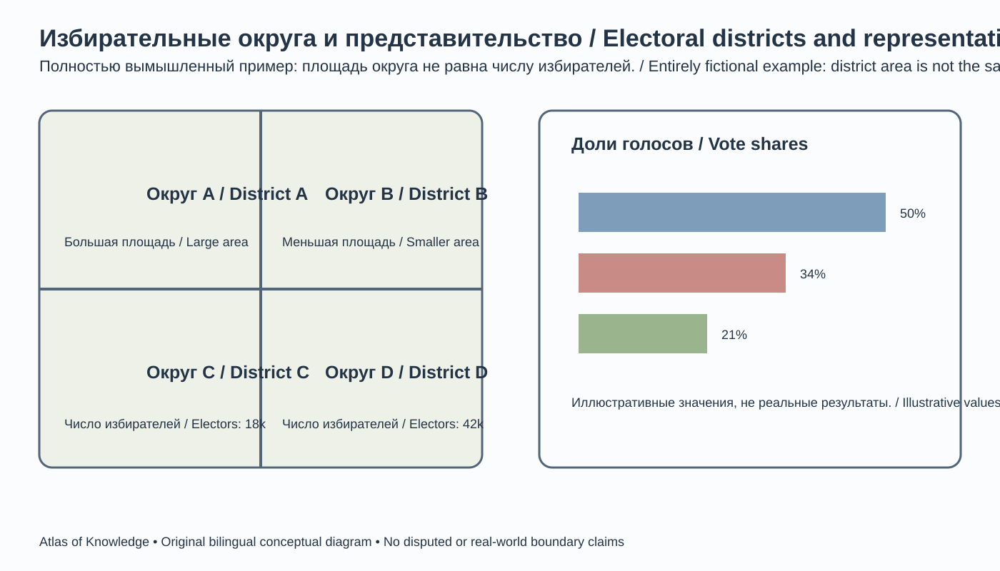
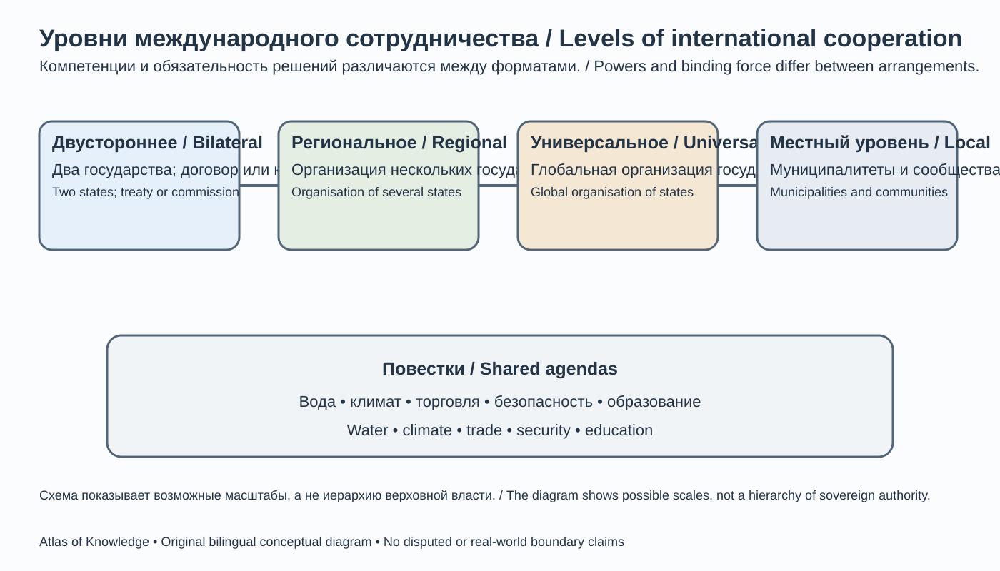
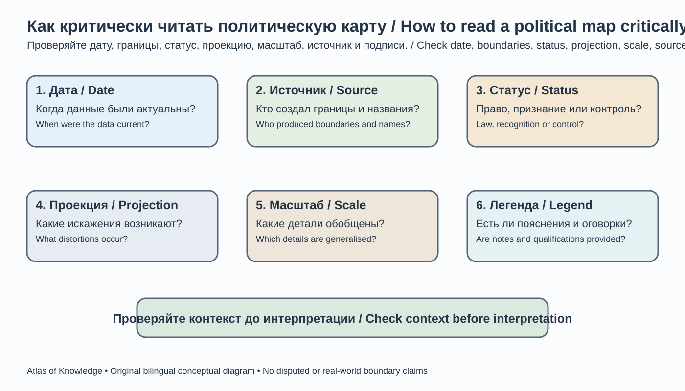

Глава 10. Политическая география
Chapter 10. Political Geography
Часть II. Человек и география общества / Part II. People and the Geography of Society
Научно-образовательный атлас географии / Scientific and Educational Geography Atlas
Цели главыChapter objectives
После изучения главы читатель сможет объяснять предмет политической географии, различать государство, нацию, территорию и суверенитет, анализировать государственные границы и территориальную организацию власти, понимать роль международных организаций, геополитических факторов и пространственных конфликтов, а также критически читать политические карты.
After studying this chapter, readers will be able to explain the scope of political geography; distinguish state, nation, territory and sovereignty; analyse borders and the territorial organisation of power; understand international organisations, geopolitical factors and spatial conflicts; and critically interpret political maps.
10.1. Предмет и задачи политической географииScope of Political Geography
Политическая география — раздел географии, который изучает, как политическая жизнь организована в пространстве. Она рассматривает связи власти, государственных институтов, границ, выборов и международных отношений с территориями, населением, ресурсами, инфраструктурой и географическим положением.
Политическая география рассматривает несколько взаимосвязанных масштабов: - локальный: муниципалитеты, районы, местные сообщества и доступность государственных услуг; - национальный: государственная территория, административное устройство, регионы и политическое представительство; - региональный: трансграничные связи, интеграционные объединения и региональная безопасность; - глобальный: международная система, мировые организации, глобальные сети и распределение влияния.
Политическая география пересекается с политологией, международными отношениями, историей, правом, экономической географией, картографией и геоинформатикой. Её задача — не только описывать политическую карту, но и объяснять процессы, формирующие её, и последствия территориальных решений для людей и окружающей среды.
10.2. Государство, нация и территорияState, Nation and Territory
Рисунок 10.1 / Figure 10.1 — Политическая карта мира / World political map.
Техническое задание: обзорная политическая карта с нейтральной и датированной легендой; отдельно различать международно признанные границы, спорные участки и линии фактического контроля. Указать источник данных, дату актуальности, проекцию и масштаб.Не использовать цвет как единственный способ кодирования статуса; легенда и подписи должны быть двуязычными.
EN production brief: Create a dated world political map with a neutral bilingual legend that distinguishes internationally recognised boundaries, disputed segments and lines of effective control. State the data source, reference date, projection and scale. Do not use colour as the only way to encode status.
Государство — политико-правовая организация публичной власти, действующая в пределах определённой территории и обладающая институтами управления, правовой системой и международной правосубъектностью. В международном праве важны такие признаки, как постоянное население, определённая территория, правительство и способность вступать в отношения с другими государствами. Их применение в конкретных случаях может быть предметом правовых и политических дискуссий.
Нация — исторически и социально сформировавшаяся общность, основанная на различных сочетаниях гражданской принадлежности, культуры, языка, исторической памяти и самоидентификации. Значение термина зависит от научной традиции и контекста. Нация не всегда совпадает с государством: одно государство может включать множество этнокультурных общностей, а представители одной нации могут жить в нескольких странах.
Территория — пространство, на которое распространяются определённые права, полномочия, формы управления или социальные связи. Государственная территория включает сухопутную территорию, внутренние воды, а у архипелажного государства — также архипелажные воды, территориальное море в пределах международного права и воздушное пространство над соответствующими территориями и водами. Суверенитет государства распространяется также на недра под его сухопутной территорией и внутренними водами; для морского дна и недр за пределами территориального моря действует особый режим, например режим континентального шельфа. Исключительная экономическая зона и континентальный шельф не являются государственной территорией: в них у прибрежного государства есть только те суверенные права и юрисдикция, которые установлены международным правом.
Необходимо различать: - государство — институты власти и правовой порядок; - страну — географическое и историко-культурное обозначение территории, часто совпадающее с государством, но не всегда; - нацию — политическую или культурно-историческую общность; - население — людей, проживающих на территории; - гражданство — юридическую связь человека с государством.
10.3. Суверенитет и признаниеSovereignty and Recognition
Суверенитет означает верховенство государственной власти внутри страны и независимость государства во внешних отношениях в рамках международного права. Суверенитет не означает неограниченную свободу действий: государства связаны международными договорами, обычными нормами международного права и принятыми обязательствами.
Государственное признание — акт или практика, посредством которых другие государства выражают готовность рассматривать образование как государство и поддерживать с ним соответствующие отношения. Признание может быть двусторонним и многосторонним, явным или подразумеваемым. Оно влияет на дипломатические, договорные и иные практические отношения, но не следует автоматически считать, что само по себе признание одной или нескольких стран решает все вопросы государственности.
В качестве часто цитируемого ориентира используют Конвенцию Монтевидео о правах и обязанностях государств 1933 года. Её статья 1 перечисляет четыре характеристики государства: постоянное население, определённая территория, правительство и способность вступать в отношения с другими государствами. Статья 3 Конвенции говорит, что политическое существование государства не зависит от признания другими государствами. Конвенция является региональным договором; её критерии широко используются в международно-правовых дискуссиях, но механическое применение четырёх пунктов не разрешает автоматически каждый спорный случай. «Определённая территория» не означает, что каждый участок границы обязательно уже окончательно согласован: наличие пограничного спора само по себе не позволяет сделать автоматический вывод об отсутствии государственности.
В теории различают декларативный подход, согласно которому признание подтверждает уже существующую государственность, и конститутивный подход, придающий признанию роль в формировании международно-правового статуса. Реальная международная практика сложнее этой схемы: значение имеют эффективность институтов, применимые нормы международного права, признание другими государствами и участие в международных организациях. Членство в международной организации и признание отдельными государствами — разные юридические и политические вопросы.
В учебной и картографической работе важно не смешивать фактический контроль над территорией, международно-правовой статус, признание и заявленные притязания. Эти характеристики могут не совпадать.
10.4. Государственные границыInternational and State Borders

10-B. Авторская двуязычная концептуальная схема; примеры не обозначают реальные или спорные границы и не заменяют юридические документы.Original bilingual conceptual diagram; examples do not represent real or disputed boundaries and do not replace legal documents.
Государственная граница — юридически установленная линия, отделяющая территорию одного государства от территории другого государства или пространства с иным правовым режимом. Её действие распространяется на соответствующие воздушное пространство и подземную область в пределах международного права; это определение не означает, что государственный суверенитет распространяется на космическое пространство. Границы устанавливаются договорами, соглашениями, решениями компетентных органов и демаркационными процедурами в соответствии с международным правом.
Основные этапы установления границы: 1. Делимитация: юридическое описание границы в договоре и нанесение её на карту. 2. Демаркация: обозначение границы на местности пограничными знаками и согласование её прохождения. 3. Редемаркация: проверка, восстановление или уточнение обозначения ранее установленной границы.
В учебной классификации по способу проведения различают геометрические, астрономические, географические и исторически сложившиеся границы. Геометрическая граница может следовать условной прямой; астрономическая — параллели или меридиану; географическая — реке, водоразделу или иной природной особенности. На практике границы часто сочетают несколько принципов, а конкретное прохождение определяется правовыми документами, а не только типом ландшафта.
Граница выполняет разные функции: разграничивает юрисдикцию, регулирует перемещение людей и товаров, обеспечивает безопасность, определяет таможенные и налоговые режимы, а также может разделять сообщества и экосистемы. Граница не обязательно является непроницаемой стеной: режим пересечения зависит от договоров, политики и инфраструктуры. На мелкомасштабной карте юридическая линия часто обобщается из-за масштаба и толщины условного знака; такая картографическая линия не заменяет договорное описание, координаты согласованных точек или официальные демаркационные материалы. Особенно осторожно следует изображать речные и озёрные границы: их правовое положение и возможное изменение русла определяются соответствующими договорами и нормами, а не только текущей береговой линией на спутниковом снимке.
Рисунок 10.2 / Figure 10.2 — Типы государственных границ / Types of state borders.
Техническое задание: четыре схематичных фрагмента — геометрическая линия, речная граница, водораздел и исторически сложившаяся граница; показать условные пограничные знаки, не использовать реальные спорные участки.
EN production brief: Create four schematic panels showing a geometric line, a river boundary, a watershed boundary and a historically established boundary.Use illustrative boundary markers and do not depict real disputed areas.
10.5. Морские пространства и политическая география океанаMaritime Zones and the Political Geography of the Ocean

10-C. Авторская двуязычная схема по UNCLOS; не в масштабе. При территориальном море шириной 12 морских миль прилежащая зона может простираться от его внешней границы до 24 морских миль от исходных линий и перекрываться с ИЭЗ; континентальный шельф может выходить за 200 морских миль при условиях статьи 76.Original bilingual diagram based on UNCLOS; not to scale. Where the territorial sea is 12 nautical miles wide, the contiguous zone may extend from its outer limit to 24 nautical miles from the baselines and overlaps the EEZ; the continental shelf may extend beyond 200 nautical miles under Article 76.
Морские пространства регулируются прежде всего Конвенцией ООН по морскому праву 1982 года. Их режимы различаются по объёму прав прибрежного государства и свобод других государств.
Ключевые понятия: - Внутренние воды: воды, расположенные со стороны суши от исходных линий, от которых измеряется территориальное море; режим в значительной степени соответствует суверенитету над сушей с учётом применимых норм. - Территориальное море: морской пояс шириной до 12 морских миль от исходных линий, в котором прибрежное государство осуществляет суверенитет с предусмотренными международным правом ограничениями, включая право мирного прохода. - Прилежащая зона: зона за пределами территориального моря, в которой государство может осуществлять необходимый контроль для предотвращения нарушений и наказания за нарушения таможенных, фискальных, иммиграционных и санитарных правил, совершённые на его территории или в территориальном море. Она не может простираться далее 24 морских миль от исходных линий, от которых измеряется территориальное море. Следовательно, при максимальной ширине территориального моря 12 морских миль прилежащая зона может занимать не более следующих 12 морских миль за его внешним пределом; отсчёт 24 миль ведётся от исходных линий, а не от края территориального моря. - Исключительная экономическая зона (ИЭЗ): зона за пределами территориального моря и прилегающая к нему, которая может простираться до 200 морских миль от исходных линий. Прибрежное государство обладает в ней суверенными правами на разведку, разработку, сохранение и управление природными ресурсами, а также установленной Конвенцией юрисдикцией, например в отношении искусственных островов, морских научных исследований и охраны морской среды. Другие государства сохраняют предусмотренные UNCLOS свободы, включая судоходство и прокладку подводных кабелей и трубопроводов. ИЭЗ не является государственной территорией и не означает полного суверенитета над водами. - Континентальный шельф: морское дно и его недра за пределами территориального моря. По Конвенции прибрежное государство имеет права на континентальный шельф как минимум до 200 морских миль от исходных линий, даже если естественная окраина материка не достигает этой ширины. Если окраина простирается дальше, внешний предел при соблюдении критериев и ограничений статьи 76 UNCLOS может быть установлен за отметкой 200 морских миль. Права относятся к разведке и разработке ресурсов дна и недр, являются исключительными и не требуют фактического занятия или специального провозглашения. Они не превращают водную толщу над шельфом в территориальные воды и не меняют её правовой режим. - Район морского дна за пределами национальной юрисдикции (The Area): морское дно, океанское дно и их недра за пределами национальной юрисдикции. По Части XI UNCLOS этот Район и его ресурсы являются общим наследием человечества; государства не могут заявлять на него суверенитет или присваивать его ресурсы вне установленного Конвенцией режима. Его не следует путать с открытым морем: речь идёт о морском дне и недрах, а не о водной толще над ними. - Открытое море: пространства водной толщи, не входящие во внутренние воды, территориальное море, архипелажные воды или ИЭЗ какого-либо государства; действует режим свобод открытого моря с предусмотренными международным правом ограничениями. Правовой статус вод над Районом морского дна не меняется только из-за того, что дно относится к Району.
Архипелажные государства имеют особый правовой режим архипелажных вод при соблюдении условий Конвенции. Государства, не имеющие выхода к морю, не обладают собственным территориальным морем или ИЭЗ. Часть X UNCLOS признаёт за ними право доступа к морю и свободу транзита через территории транзитных государств; практические условия, маршруты и процедуры определяются соглашениями с учётом законных интересов транзитных государств. Поэтому географическое положение без выхода к морю создаёт дополнительные транспортные и договорные задачи, но не означает отсутствия международно-правовых прав на транзит. Морские границы между соседними прибрежными государствами могут требовать делимитации по соглашению или судебным и арбитражным процедурам.
Рисунок 10.3 / Figure 10.3 — Морские зоны по Конвенции ООН по морскому праву / Maritime zones under UNCLOS.
Техническое задание: поперечная схема от побережья к открытому морю с исходной линией, внутренними водами, территориальным морем (до 12 морских миль), прилежащей зоной (до 24 морских миль от исходных линий), ИЭЗ (до 200 морских миль) и континентальным шельфом; отдельно показать, что ИЭЗ и континентальный шельф имеют разные правовые основания и что расстояния отсчитываются от исходных линий. На морском дне за пределами национальной юрисдикции обозначить Район (The Area), а в водной толще над ним — открытое море; показать, что это разные правовые понятия. Не изображать зоны как равные по ширине.
EN production brief: Create a cross-section from the coast to the high seas showing the baseline, internal waters, territorial sea (up to 12 nautical miles), contiguous zone (up to 24 nautical miles from baselines), EEZ (up to 200 nautical miles) and continental shelf. Show that the EEZ and continental shelf have different legal bases and that distances are measured from baselines. On the seabed beyond national jurisdiction, label the Area; in the water column above it, label the high seas. Make clear that these are different legal concepts, and do not draw the zones to equal widths.
10.5.1. Разобранный пример: перевод морских миль в километрыWorked Example: Converting Nautical Miles to Kilometres
Одна морская миля равна ровно 1,852 км. Если для учебной задачи принять исходную линию за условную точку отсчёта и рассчитать предельную ширину морских зон:
- территориальное море шириной до 12 морских миль: 12 × 1,852 = 22,224 км;
- внешний предел прилежащей зоны — до 24 морских миль от исходных линий: 24 × 1,852 = 44,448 км. Это расстояние отсчитывается от исходных линий в целом, а не добавляется к 12 милям территориального моря;
- исключительная экономическая зона, предел которой может достигать 200 морских миль от исходных линий: 200 × 1,852 = 370,4 км.
Это перевод единиц, а не способ самостоятельно провести юридическую границу на карте. В реальности расстояния измеряются от установленных исходных линий, учитываются географические особенности побережья, острова, возможное перекрытие зон соседних или противолежащих государств и применимые международные соглашения. ИЭЗ не означает, что всё пространство до 200 морских миль становится государственной территорией.
10.6. Административно-территориальное устройствоAdministrative and Territorial Organisation
Государства организуют территорию для управления, представительства, предоставления услуг и распределения ресурсов. Административно-территориальные единицы могут называться областями, провинциями, штатами, землями, регионами, округами, районами или муниципалитетами.
По устройству государств часто выделяют: - унитарные государства, где конституционная система власти организована как единое государство, хотя полномочия могут быть широко децентрализованы; - федеративные государства, где конституция распределяет полномочия между федеральным уровнем и субъектами федерации; - конфедерации и конфедеративные союзы, обычно представляющие собой договорные объединения суверенных государств. В отличие от федерации, конфедерация не обязательно образует единое суверенное государство; это отдельная аналитическая и историческая категория, а не обязательная третья ступень классификации современных государств.
Унитарность не означает обязательной централизации, а федерализм не исключает сильных общегосударственных институтов. Реальные системы могут сочетать разные формы автономии, децентрализации и асимметричного распределения полномочий.
Децентрализация — передача полномочий, ресурсов и ответственности от центрального уровня к региональным или местным органам. В рамках децентрализации часто различают деконцентрацию, когда центральная власть распределяет задачи между своими территориальными подразделениями без передачи самостоятельных полномочий, и деволюцию, при которой полномочия передаются избранным субнациональным органам в пределах, установленных конституцией или законом. Терминология и правовые последствия зависят от национальной системы. Децентрализация может улучшать адаптацию решений к местным условиям, но требует прозрачного финансирования, подотчётности и достаточной административной компетенции.

10-D. Авторская двуязычная концептуальная схема; реальные полномочия определяются конституцией и законами каждой страны.Original bilingual conceptual diagram; actual powers are defined by each country's constitution and laws.
Рисунок 10.4 / Figure 10.4 — Территориальные модели государства / Territorial models of the state.
Техническое задание: сравнить унитарную и федеративную схемы распределения полномочий; использовать условные блоки уровней управления, не изображать федерацию как простое административное деление.
EN production brief: Compare unitary and federal arrangements of governmental powers using schematic blocks for levels of government.Do not portray a federation as merely an administrative subdivision.
10.7. Столицы, политические центры и территориальное управлениеCapitals, Political Centres and Territorial Governance
Столица обычно является местом размещения высших государственных органов, но не всегда единственным политическим или экономическим центром. В некоторых странах отдельные функции распределены между несколькими городами. Столичные функции включают законодательное, исполнительное и судебное управление, дипломатические представительства и национальные институты.
Выбор и перенос столицы может быть связан с историей, безопасностью, географическим положением, региональным балансом, развитием инфраструктуры или стремлением сформировать новый административный центр. Новый город не гарантирует автоматического перераспределения населения и экономической активности.
Территориальное управление требует учитывать расстояния, рельеф, транспортную доступность, расселение, культурные особенности и доступ граждан к услугам. Большие расстояния и сложный рельеф повышают стоимость предоставления образования, медицины, правосудия и других государственных услуг.
10.8. Выборы и география политического представительстваElections and the Geography of Political Representation
География выборов исследует пространственное распределение голосования, политического участия и представительства. На электоральные результаты могут влиять возрастная структура, урбанизация, занятость, образование, социальное положение, региональная идентичность, транспортная доступность и особенности избирательной системы.
Избирательные округа формируются по правилам конкретной избирательной системы и законодательства. Во многих системах важны равное избирательное право и сопоставимая численность избирателей, однако допустимые отклонения и исключения зависят от конституции, вида выборов, территориальных особенностей и принципов представительства. Неравное представительство округов (malapportionment) возникает, когда округа существенно различаются по числу избирателей на одно место; это может придавать голосам разный вес. Джерримендеринг — намеренное изменение границ округов ради политического преимущества. Добросовестная процедура требует беспристрастности, прозрачности и возможности общественного обсуждения.
Картографирование результатов выборов требует осторожности: - доля голосов и абсолютное число голосов — разные показатели; - победа партии в округе не означает единодушия жителей; - административные границы могут скрывать локальные различия; - корреляция между характеристикой территории и голосованием не доказывает индивидуальные мотивы избирателей; - карты должны указывать дату, уровень выборов и метод агрегирования.

10-E. Авторская двуязычная схема; геометрия округов и значения вымышлены, не являются электоральными данными.Original bilingual diagram; district geometry and values are fictional, not electoral data.
Рисунок 10.5 / Figure 10.5 — География избирательного представительства / Geography of electoral representation.
Техническое задание: условная карта округов с различной численностью населения и отдельная диаграмма долей голосов; наглядно показать разницу между территориальной площадью округа и числом избирателей.
EN production brief: Create a hypothetical map of electoral districts with different population sizes and a separate chart of vote shares.Make clear that the land area of a district is not the same as its number of voters.
10.9. Геополитика и географические факторыGeopolitics and Geographic Factors
Геополитика исследует взаимосвязь географического положения, территории, ресурсов, инфраструктуры и политической силы в международных отношениях. Она включает анализ пространственных интересов государств, стратегических коммуникаций, транспортных коридоров, морских путей, энергетических систем, приграничных регионов и региональной безопасности.
Географическое положение может создавать возможности и ограничения, но не предопределяет политическое поведение. Технологии, институты, экономика, международное право, дипломатия и решения общества способны существенно менять значение географических факторов.
В классических геополитических теориях встречаются крупные пространственные модели и концепции. Их следует изучать как исторически обусловленные интеллектуальные конструкции, а не как объективные законы мировой политики. Современный анализ должен избегать географического детерминизма — представления, будто климат, положение или рельеф автоматически определяют судьбу государства.
К важным факторам относятся: - положение относительно рынков и транспортных коридоров; - доступ к морю и международным коммуникациям; - характер соседства и приграничных связей; - размещение энергетических и минеральных ресурсов; - водные бассейны и трансграничные экологические системы; - устойчивость инфраструктуры и логистики; - уязвимость к природным опасностям и изменению климата.
10.10. Международные организации и региональная интеграцияInternational Organisations and Regional Integration
Международные организации создаются государствами на основе договоров или иных согласованных механизмов для координации действий и решения общих задач. Они различаются по членству, полномочиям, географическому охвату и сфере деятельности.
Организация Объединённых Наций (ООН) — универсальная международная организация, центральная площадка многостороннего сотрудничества. Её система включает главные органы, фонды и программы, а также специализированные учреждения. Специализированные учреждения — самостоятельные международные организации, связанные с ООН соглашениями о сотрудничестве; они не являются обычными подразделениями Секретариата. ООН не является мировым правительством и не обладает общей властью над государствами.
Региональные организации и интеграционные объединения могут развивать торговлю, транспорт, безопасность, научное сотрудничество и общие стандарты. В экономической интеграции различают, например, зону свободной торговли (снижение или отмена внутренних тарифов при сохранении собственной внешнеторговой политики участников), таможенный союз (общий внешний тариф), общий рынок (дополнительная свобода движения факторов производства) и более глубокие формы экономического союза. Это аналитические типы: реальные соглашения могут сочетать признаки нескольких моделей, а интеграция не всегда развивается по одной обязательной последовательности.
При изучении организаций необходимо различать: - межправительственную организацию и неправительственную организацию; - договорное обязательство и политическую декларацию; - членство, статус наблюдателя и партнёрство; - региональное сотрудничество и передачу части полномочий наднациональным институтам.

10-F. Авторская двуязычная схема; масштабы сотрудничества не образуют единую иерархию полномочий.Original bilingual diagram; cooperation scales do not form a single hierarchy of authority.
Рисунок 10.6 / Figure 10.6 — Масштабы международного сотрудничества / Scales of international cooperation.
Техническое задание: схема от двустороннего соглашения к региональной организации и универсальной международной организации; показать, что компетенции и обязательность решений различаются.
EN production brief: Diagram the progression from a bilateral agreement to a regional organisation and a universal international organisation.Show that their powers and the binding force of their decisions differ.
10.11. Политическая география ресурсов и инфраструктурыPolitical Geography of Resources and Infrastructure
Распределение природных ресурсов и инфраструктуры имеет политическое значение, поскольку влияет на доходы, безопасность, торговлю и отношения между территориями. Ключевыми объектами анализа являются месторождения полезных ископаемых, нефтегазовые системы, электросети, водохранилища, транспортные коридоры, порты, трубопроводы и цифровые коммуникации.
Трансграничные реки и связанные с ними подземные воды требуют сотрудничества государств бассейна. Конвенция ООН 1997 года о международных водотоках определяет водоток как систему поверхностных и подземных вод, которые физически связаны, образуют единое целое и обычно имеют общий конечный пункт стока; она регулирует прежде всего не связанные с судоходством виды использования и защиту таких водотоков. Отдельные трансграничные водоносные горизонты, не образующие часть такой системы, требуют учёта специальных правовых подходов, включая Проект статей о праве трансграничных водоносных горизонтов 2008 года. Генеральная Ассамблея ООН приняла этот проект к сведению резолюцией 63/124; это проект статей, а не вступивший в силу международный договор. Применимость конкретного договора зависит от участия государств и действующих бассейновых соглашений. Верхнее и нижнее положение в речной системе создаёт разные географические условия, но не определяет автоматически конфликт или сотрудничество. Важны совместные данные, инфраструктурное планирование, сезонность стока, экологические потребности и справедливое распределение выгод и рисков.
Ресурсное богатство не гарантирует высокого уровня развития. Результаты зависят от качества институтов, прозрачности управления, диверсификации экономики, распределения доходов и экологических стандартов. Концентрация экспорта на одном ресурсе может усиливать зависимость от мировых цен.
10.12. Конфликты, спорные территории и международное правоConflicts, Disputed Territories and International Law
Территориальные споры могут возникать из-за несовпадающих исторических интерпретаций, договоров, природных ресурсов, стратегического положения, наследия колониального периода и изменения политических условий. Они могут касаться сухопутных границ, островов, морских зон, воздушного пространства и доступа к ресурсам.
Политическая география должна описывать спорные вопросы точно и нейтрально: - указывать, кто заявляет притязания и на каком основании; - различать фактическое управление и международно-правовую позицию; - ссылаться на договоры, решения международных судов и официальные документы; - отмечать дату актуальности карты; - не представлять односторонние заявления как общепризнанные факты.
Устав ООН требует от государств стремиться к мирному разрешению споров. Возможные средства включают переговоры, обследование обстоятельств, посредничество, добрые услуги, примирение, арбитраж, судебное разбирательство и обращение к региональным механизмам. Применимый способ зависит от характера спора, согласия сторон и соответствующих правовых оснований. Международный суд ООН не является судом с автоматической обязательной юрисдикцией по любому спору между государствами: основание его юрисдикции должно вытекать из согласия государств, например из специального соглашения, договорной оговорки или признания обязательной юрисдикции в предусмотренной форме.
Политические границы и статусы могут меняться. Поэтому карты для публикации должны проходить юридическую и редакционную проверку, особенно если отображают спорные или недавно изменившиеся территории.
10.13. Колониализм, деколонизация и наследие границColonialism, Decolonisation and the Legacy of Borders
В этой главе колониализм рассматривается прежде всего как система формального политического господства, при которой внешняя держава управляет территорией и населением вне собственного государства. Колониальные системы существенно повлияли на политическую карту мира, хозяйственные структуры, языковую среду, транспортные сети и административные границы. Колониальные отношения могли принимать разные формы, поэтому один общий пример не описывает все исторические случаи.
Деколонизация — исторический процесс прекращения колониального господства и достижения народами права самостоятельно определять политический статус и направление развития. Она происходила в разные периоды и формах, включая переговоры, массовые движения, политические реформы и вооружённые конфликты. Право на самоопределение закреплено в документах ООН, в том числе в Декларации о предоставлении независимости колониальным странам и народам 1960 года. При этом деколонизация не означает автоматического пересмотра каждой существующей границы: конкретные вопросы рассматриваются с учётом применимых норм международного права и исторического контекста.
Наследие колониальных границ неоднозначно. Некоторые границы разделили исторически связанные сообщества или объединили различные группы в одном государстве; в других случаях границы были изменены позднее. Нельзя объяснять современные конфликты только колониальным наследием: необходимо учитывать последующие решения, институты, экономические условия и региональную историю.
10.14. Политическая картография и критическое чтение картPolitical Cartography and Critical Map Reading
Политическая карта показывает государства, границы, столицы и другие административные или политические объекты. Она является не только техническим изображением, но и результатом выбора классификаций, масштаба, проекции, цветовой схемы, названий и даты.
При чтении политической карты следует проверять: 1. дату составления и дату актуальности границ; 2. источник геопространственных и правовых данных; 3. масштаб и картографическую проекцию; 4. способ отображения спорных территорий; 5. легенду, подписи и транслитерацию географических названий; 6. различие между государственными, административными и фактическими линиями контроля.
Цветовое выделение территории может создавать впечатление единого статуса, даже если её правовое положение сложнее. Карта должна содержать ясные пояснения и не скрывать неопределённость.

10-G. Авторская двуязычная учебная схема; контрольный список не заменяет проверку первичных правовых и картографических источников.Original bilingual teaching diagram; the checklist does not replace primary legal and cartographic source checks.
Рисунок 10.7 / Figure 10.7 — Как критически читать политическую карту / How to read a political map critically.
Техническое задание: учебная карта с легендой и отдельной панелью проверки: дата, источник, статус границ, проекция, масштаб, названия и примечания о спорных участках.
EN production brief: Create a teaching political map with a legend and a separate verification panel covering date, source, boundary status, projection, scale, place names and notes on disputed areas.
10.15. Геоинформационные методы в политической географииGeospatial Methods in Political Geography
Геоинформационные системы позволяют объединять административные границы, население, инфраструктуру, природные ресурсы, избирательные результаты и данные о доступности услуг. Пространственный анализ помогает выявлять региональные различия, оценивать транспортную доступность, моделировать зоны обслуживания и изучать последствия административных реформ.
Источники данных могут включать официальные статистические службы, государственные геопорталы, международные организации, открытые картографические проекты и научные исследования. Каждый источник требует проверки точности, даты, лицензии, методики и полноты охвата.
Международные статистические классификации, например стандарт ООН M49, группируют страны и территории для статистических публикаций и сопоставлений. Они не устанавливают суверенитет, государственность, международное признание или юридическое прохождение государственной границы.
Глава рассматривает общие принципы и не делает утверждений о текущем правовом статусе конкретных спорных территорий или незавершённых делимитаций. Если в дальнейшем будет добавлен страновой кейс, он должен опираться на первичные правовые документы, действующие договоры и соглашения, а также применимые решения компетентных судов или трибуналов; необходимо указывать дату и точный географический охват. Картографическая линия сама по себе не заменяет юридический анализ.
Особое внимание следует уделять несовпадению статистических и административных границ, их изменениям во времени и ограничениям пространственной агрегации. Экологическая ошибка возникает, когда закономерность, обнаруженную для группы или территории, ошибочно переносят на каждого отдельного человека. Проблема изменяемых территориальных единиц (MAUP) означает, что результаты пространственного анализа могут меняться при изменении масштаба или способа объединения районов. Поэтому выводы нужно проверять на нескольких уровнях агрегации, учитывать неполноту данных в труднодоступных регионах, защищать персональные данные и сохранять нейтральность классификаций и визуализаций.
10.15.1. Как читать карту государственной границыReading a Map of an International Boundary
Линия на политической карте может обозначать границу с разным юридическим и картографическим статусом. Для корректного чтения необходимо различать делимитацию — описание прохождения границы в договоре или ином правовом документе, демаркацию — обозначение линии на местности, и её последующее обслуживание и совместное управление.
Что проверять на карте: дату издания и источник; масштаб и точность исходных данных; легенду; тип линии и поясняющие примечания; наличие спорных или неурегулированных участков; соответствие карты действующим официальным документам. Условная линия на обзорной карте не заменяет договор, протокол или официальную координатную документацию.
Границы и повседневная жизнь. Пограничная линия может пересекать транспортные, водные, пастбищные и родственные связи. Для анализа доступности услуг и хозяйственных маршрутов важно отдельно учитывать официальные пункты пропуска, режим их работы, разрешённые виды пересечения и сезонные ограничения. Нельзя выводить фактическую доступность из одной лишь геометрической близости к границе.
Нейтральность и точность. При описании участков, статус которых оспаривается или трактуется сторонами по-разному, следует ясно обозначать, чью позицию отражает источник, приводить дату и избегать представления спорной линии как бесспорного факта. Карта должна показывать неопределённость и статус данных, а не скрывать их.
Учебное задание. Сравните две карты одной приграничной территории, изданные в разные годы. Найдите различия в легенде, источниках, масштабе и обозначении линии. Составьте список документов и официальных данных, которые понадобились бы для проверки каждого различия.
10.1. Scope of Political Geography
Political geography is a branch of human geography that studies how political life is organised across space. It examines how power, state institutions, borders, elections and international relations are connected with territories, populations, resources, infrastructure and geographic location.
Political geography considers several interconnected scales: - local: municipalities, districts, local communities and access to public services; - national: state territory, administrative organisation, regions and political representation; - regional: cross-border connections, integration organisations and regional security; and - global: the international system, world organisations, global networks and the distribution of influence.
Political geography intersects with political science, international relations, history, law, economic geography, cartography and geoinformatics. Its task is not only to describe the political map but also to explain the processes that shape it and the consequences of territorial decisions for people and the environment.
10.2. State, Nation and Territory
A state is a political and legal organisation of public authority operating within a defined territory and possessing governing institutions, a legal system and international legal personality. In international law, relevant characteristics include a permanent population, a defined territory, a government and the capacity to enter into relations with other states. Their application in particular cases may be subject to legal and political debate.
A nation is a historically and socially formed community based on different combinations of civic belonging, culture, language, historical memory and self-identification. The meaning of the term depends on scholarly tradition and context. A nation does not always coincide with a state: one state may contain many ethnocultural communities, while members of one nation may live in several countries.
A territory is a space over which particular rights, powers, forms of governance or social relationships apply. State territory includes land territory, internal waters and, for an archipelagic state, archipelagic waters, the territorial sea as defined by international law, and the airspace above the relevant territory and waters. State sovereignty also extends to the subsoil beneath its land territory and internal waters; the seabed and subsoil beyond the territorial sea are subject to a distinct regime, such as the continental-shelf regime. The exclusive economic zone and continental shelf are not state territory: the coastal state has only the sovereign rights and jurisdiction granted by international law in those areas.
The following concepts should be distinguished: - state: institutions of power and a legal order; - country: a geographical and historical-cultural designation for a territory, often but not always corresponding to a state; - nation: a political or cultural-historical community; - population: people living in a territory; and - citizenship: the legal relationship between a person and a state.
10.3. Sovereignty and Recognition
Sovereignty means the supremacy of state authority within the country and the state's independence in external relations within the framework of international law. Sovereignty does not mean unlimited freedom of action: states are bound by international treaties, customary international law and their accepted obligations.
State recognition is an act or practice through which other states express their willingness to treat an entity as a state and maintain corresponding relations with it. Recognition may be bilateral or multilateral, explicit or implicit. It affects diplomatic, treaty and other practical relations, but recognition by one or several countries should not automatically be treated as resolving every question of statehood.
The 1933 Montevideo Convention on the Rights and Duties of States is often cited as a reference point. Article 1 lists four qualifications of a state: a permanent population, a defined territory, government, and the capacity to enter into relations with other states. Article 3 states that the political existence of a state is independent of recognition by other states. The Convention is a regional treaty; its criteria are widely used in discussions of international law, but mechanically applying the four points does not automatically resolve every contested case. A “defined territory” does not mean that every boundary segment must already be finally agreed: the existence of a border dispute does not, by itself, automatically settle the question of statehood.
Legal theory distinguishes the declaratory approach, under which recognition acknowledges statehood that already exists, from the constitutive approach, which gives recognition a role in forming international legal status. Actual international practice is more complex than this distinction: the effectiveness of institutions, applicable rules of international law, recognition by other states and participation in international organisations may all matter. Membership in an international organisation and recognition by individual states are distinct legal and political questions.
In educational and cartographic work, it is important not to confuse effective territorial control, international legal status, recognition and claims. These characteristics may not coincide.
10.4. International and State Borders
A state border is a legally established line separating the territory of one state from another state or from an area with a different legal regime. Its effects extend to the relevant airspace and subsurface within the limits of international law; this does not mean that state sovereignty extends into outer space. Borders are established through treaties, agreements, decisions of competent authorities and demarcation procedures in accordance with international law.
The main stages of establishing a border are: 1. Delimitation: legal description of the border in a treaty and its depiction on a map. 2. Demarcation: marking the border on the ground with boundary markers and agreeing on its course. 3. Redemarcation: checking, restoring or clarifying the marking of a previously established border.
In a teaching classification, borders may be geometric, astronomical, geographic or historically established. A geometric border may follow an agreed straight line; an astronomical border may follow a parallel or meridian; and a geographic border may follow a river, watershed or other natural feature. In practice, borders often combine several principles, and their precise course is determined by legal documents rather than by landscape type alone.
Borders perform different functions: they divide jurisdiction, regulate the movement of people and goods, support security, define customs and tax regimes, and may divide communities and ecosystems. A border is not necessarily an impermeable wall: crossing rules depend on treaties, policy and infrastructure. On a small-scale map, a legal boundary is often generalised because of map scale and symbol width; the cartographic line does not replace a treaty description, agreed coordinates or official demarcation records. River and lake boundaries require particular care: their legal position and any treatment of channel change are governed by the relevant treaties and rules, not simply by the current shoreline visible in a satellite image.
10.5. Maritime Zones and the Political Geography of the Ocean
Maritime spaces are governed primarily by the 1982 United Nations Convention on the Law of the Sea (UNCLOS). Their legal regimes differ in the rights of coastal states and the freedoms retained by other states.
Key concepts include: - Internal waters: waters on the landward side of the baselines from which the territorial sea is measured. Their regime largely corresponds to sovereignty over land, subject to applicable rules. - Territorial sea: a belt of sea up to 12 nautical miles from the baselines, in which the coastal state exercises sovereignty subject to limitations under international law, including the right of innocent passage. - Contiguous zone: an area beyond the territorial sea in which a state may exercise the control necessary to prevent infringement of, and punish infringement of, its customs, fiscal, immigration and sanitary laws committed within its territory or territorial sea. It may not extend beyond 24 nautical miles from the baselines from which the territorial sea is measured. Thus, where the territorial sea extends to its maximum 12 nautical miles, the contiguous zone can extend no more than a further 12 nautical miles beyond its outer limit; the 24-mile limit is measured from the baselines, not from the edge of the territorial sea. - Exclusive Economic Zone (EEZ): an area beyond and adjacent to the territorial sea that may extend up to 200 nautical miles from the baselines. The coastal state has sovereign rights to explore, exploit, conserve and manage natural resources, together with the jurisdiction specified by UNCLOS, including over artificial islands, marine scientific research and protection of the marine environment. Other states retain Convention-based freedoms, including navigation and the laying of submarine cables and pipelines. The EEZ is not state territory and does not confer full sovereignty over the water column. - Continental shelf: the seabed and subsoil beyond the territorial sea. Under the Convention, a coastal state has continental-shelf rights at least to 200 nautical miles from the baselines, even where the natural prolongation of the land territory does not extend that far. Where the continental margin extends farther, the outer limit may be established beyond 200 nautical miles if the criteria and constraints in Article 76 of UNCLOS are met. These exclusive rights concern exploration and exploitation of seabed and subsoil resources and do not depend on occupation or express proclamation. They do not turn the water column above the shelf into territorial waters or change its legal status. - The Area (seabed beyond national jurisdiction): the seabed, ocean floor and subsoil beyond the limits of national jurisdiction. Under Part XI of UNCLOS, the Area and its resources are the common heritage of humankind; states may not claim sovereignty over it or appropriate its resources outside the Convention's regime. It must not be confused with the high seas: the Area concerns the seabed and subsoil, not the water column above them. - High seas: the water column not included in the internal waters, territorial sea, archipelagic waters or EEZ of a state. The freedoms of the high seas apply subject to international law. The legal status of waters above the Area is not changed merely because the seabed is part of the Area.
Archipelagic states have a special legal regime for archipelagic waters when the conditions of the Convention are met. Landlocked states have no territorial sea or EEZ of their own. Part X of UNCLOS recognises their right of access to and from the sea and freedom of transit through the territories of transit states; practical terms, routes and procedures are established by agreement while taking the legitimate interests of transit states into account. A landlocked location therefore creates additional transport and treaty-related challenges, but it does not mean that a state has no international legal rights of transit. Maritime boundaries between neighbouring coastal states may require delimitation by agreement or through judicial or arbitral procedures.
10.5.1. Worked Example: Converting Nautical Miles to Kilometres
One nautical mile is exactly 1.852 km. For a classroom calculation, if the baseline is treated as the reference point, the maximum breadths can be converted as follows:
- territorial sea, up to 12 nautical miles: 12 × 1.852 = 22.224 km;
- contiguous zone, with an outer limit of up to 24 nautical miles from the baselines: 24 × 1.852 = 44.448 km. This is the total distance measured from the baselines, not an additional 24 miles beyond the 12-mile territorial sea;
- exclusive economic zone, whose outer limit may extend up to 200 nautical miles from the baselines: 200 × 1.852 = 370.4 km.
This is a unit conversion, not a method for independently drawing a legally valid boundary on a map. In practice, distances are measured from established baselines; coastal geography, islands, overlapping claims involving neighbouring or opposite states, and applicable international agreements must also be considered. An EEZ does not mean that all waters out to 200 nautical miles become the state's territory.
10.6. Administrative and Territorial Organisation
States organise territory for governance, representation, service delivery and resource allocation. Administrative units may be called oblasts, provinces, states, lands, regions, districts, counties or municipalities.
States are often distinguished by their territorial organisation: - unitary states, in which the constitutional system is organised as one state, although powers may be widely decentralised; - federal states, in which the constitution distributes powers between the federal level and constituent units; and - confederations and confederal unions, which are usually treaty-based associations of sovereign states. Unlike a federation, a confederation does not necessarily form one sovereign state; it is a separate analytical and historical category, not an obligatory third type in a classification of contemporary states.
A unitary state is not necessarily centralised, and federalism does not exclude strong national institutions. Real systems may combine different forms of autonomy, decentralisation and asymmetric allocation of powers.
Decentralisation is the transfer of powers, resources and responsibilities from central government to regional or local authorities. Common forms or approaches within decentralisation include deconcentration, which redistributes tasks among territorial offices of central government without granting them autonomous powers, and devolution, which transfers powers to elected subnational authorities within limits set by the constitution or law. Terminology and legal consequences vary by national system. Decentralisation may help adapt decisions to local conditions, but requires transparent funding, accountability and sufficient administrative capacity.
10.7. Capitals, Political Centres and Territorial Governance
A capital is usually the location of the highest state institutions, but it is not always the only political or economic centre. In some countries, different functions are distributed among several cities. Capital functions include legislative, executive and judicial governance, diplomatic missions and national institutions.
The choice or relocation of a capital may be linked to history, security, geographic location, regional balance, infrastructure development or an attempt to create a new administrative centre. A new city does not automatically guarantee redistribution of population or economic activity.
Territorial governance must consider distances, relief, transport access, settlement patterns, cultural characteristics and citizens' access to services. Large distances and complex terrain increase the cost of providing education, health care, justice and other public services.
10.8. Elections and the Geography of Political Representation
Electoral geography studies the spatial distribution of voting, political participation and representation. Electoral outcomes may be influenced by age structure, urbanisation, employment, education, social position, regional identity, transport access and the electoral system.
Electoral districts are formed under the rules of the relevant electoral system and national law. Many systems emphasise equal suffrage and broadly comparable district populations, but permitted deviations and exceptions depend on the constitution, type of election, territorial circumstances and principles of representation. Malapportionment occurs when districts differ substantially in the number of voters represented by each seat; this can give votes unequal weight. Gerrymandering is the intentional drawing or alteration of district boundaries for political advantage. A sound process requires impartiality, transparency and opportunities for public consultation.
Electoral mapping requires caution: - vote share and absolute vote totals are different indicators; - a party's victory in a district does not mean that all residents support it; - administrative boundaries may conceal local differences; - a correlation between territorial characteristics and voting does not prove individual voter motivations; and - maps should state the date, election level and aggregation method.
10.9. Geopolitics and Geographic Factors
Geopolitics studies the relationship between geographic location, territory, resources, infrastructure and political power in international relations. It includes analysis of state spatial interests, strategic communications, transport corridors, sea routes, energy systems, border regions and regional security.
Geographic location may create opportunities and constraints, but it does not determine political behaviour. Technology, institutions, economics, international law, diplomacy and societal decisions can substantially change the significance of geographic factors.
Classical geopolitical theories include large-scale spatial models and concepts. They should be studied as historically conditioned intellectual constructs, not as objective laws of world politics. Modern analysis should avoid geographic determinism, the idea that climate, location or relief automatically determines a state's fate.
Important factors include location relative to markets and transport corridors; access to the sea and international communications; neighbourhood and border relations; the location of energy and mineral resources; river basins and transboundary ecological systems; infrastructure and logistics resilience; and vulnerability to natural hazards and climate change.
10.10. International Organisations and Regional Integration
International organisations are created by states through treaties or other agreed mechanisms to coordinate action and address common tasks. They differ in membership, powers, geographic coverage and areas of activity.
The United Nations (UN) is a universal international organisation and a central forum for multilateral cooperation. Its system includes principal organs, funds and programmes, as well as specialised agencies. Specialised agencies are autonomous international organisations linked to the UN through cooperation agreements; they are not ordinary departments of the Secretariat. The UN is not a world government and does not possess general authority over states.
Regional organisations and integration arrangements may develop trade, transport, security, scientific cooperation and common standards. Economic integration may include a free-trade area (reduced or removed internal tariffs while members retain their own external trade policies), a customs union (a common external tariff), a common market (additional freedom of movement for factors of production) and deeper forms of economic union. These are analytical types: real agreements may combine features of several models, and integration does not always follow one mandatory sequence.
When studying organisations, distinguish an intergovernmental organisation from a non-governmental organisation; a treaty obligation from a political declaration; membership from observer status and partnership; and regional cooperation from the transfer of some powers to supranational institutions.
10.11. Political Geography of Resources and Infrastructure
The distribution of natural resources and infrastructure has political significance because it affects income, security, trade and relations between territories. Important objects of analysis include mineral deposits, oil and gas systems, electricity grids, reservoirs, transport corridors, ports, pipelines and digital communications.
Transboundary rivers and connected groundwater require cooperation among basin states. The 1997 UN Watercourses Convention defines a watercourse as a system of surface waters and groundwaters that are physically related, form a unitary whole and normally flow into a common terminus; it principally addresses non-navigational uses and protection of such watercourses. Separate transboundary aquifers that do not form part of such a system require attention to specific legal approaches, including the 2008 Draft Articles on the Law of Transboundary Aquifers. The UN General Assembly took note of these draft articles in Resolution 63/124; they are draft articles, not an international treaty in force. The applicability of a particular treaty depends on state participation and existing basin agreements. Upstream and downstream positions create different geographic conditions but do not automatically determine conflict or cooperation. Shared data, infrastructure planning, seasonal flow, ecological needs and fair distribution of benefits and risks all matter.
Resource wealth does not guarantee a high level of development. Outcomes depend on institutional quality, transparent governance, economic diversification, revenue distribution and environmental standards. Concentration of exports in one resource may increase dependence on world prices.
10.12. Conflicts, Disputed Territories and International Law
Territorial disputes may arise from differing historical interpretations, treaties, natural resources, strategic location, colonial legacies and changing political conditions. They may concern land borders, islands, maritime zones, airspace and access to resources.
Political geography should describe disputes accurately and neutrally: - identify who makes a claim and on what basis; - distinguish effective administration from an international legal position; - refer to treaties, international court decisions and official documents; - state the date of the map; and - avoid presenting unilateral statements as universally accepted facts.
The UN Charter requires states to seek the peaceful settlement of disputes. Available means include negotiation, enquiry, mediation, good offices, conciliation, arbitration, judicial settlement and recourse to regional arrangements. The applicable method depends on the nature of the dispute, the consent of the parties and the relevant legal basis. The International Court of Justice does not have automatic compulsory jurisdiction over every dispute between states: its jurisdiction must rest on state consent, for example through a special agreement, a treaty clause or acceptance of compulsory jurisdiction in the applicable form.
Political boundaries and statuses may change. Maps prepared for publication should therefore undergo legal and editorial review, especially where they show disputed or recently changed territories.
10.13. Colonialism, Decolonisation and the Legacy of Borders
In this chapter, colonialism is considered primarily as a system of formal political domination in which an external power governs a territory and population beyond its own state. Colonial systems had a major influence on the world political map, economic structures, language environments, transport networks and administrative boundaries. Colonial relationships took different forms, so no single example describes every historical case.
Decolonisation is the historical process through which colonial rule ended and peoples exercised the right to determine their political status and pursue their development. It occurred in different periods and forms, including negotiations, mass movements, political reforms and armed conflicts. The right to self-determination is recognised in UN instruments, including the 1960 Declaration on the Granting of Independence to Colonial Countries and Peoples. Decolonisation does not, however, automatically require the redrawing of every existing boundary: specific questions must be considered under applicable international law and in their historical context.
The legacy of colonial borders is complex. Some borders divided historically connected communities or brought different groups into one state; in other cases, borders were changed later. Modern conflicts cannot be explained by colonial legacies alone: subsequent decisions, institutions, economic conditions and regional history must also be considered.
10.14. Political Cartography and Critical Map Reading
A political map shows states, borders, capitals and other administrative or political features. It is not only a technical image but also the result of choices about classifications, scale, projection, colour scheme, names and date.
When reading a political map, check: 1. the compilation date and the date to which the boundaries are current; 2. the source of geospatial and legal data; 3. scale and map projection; 4. the method used to depict disputed territories; 5. legend, labels and transliteration of place names; and 6. the difference between state borders, administrative boundaries and lines of effective control.
Colouring an area may create the impression of a single status even when its legal position is more complex. A map should include clear explanations and should not conceal uncertainty.
10.15. Geospatial Methods in Political Geography
Geographic information systems can combine administrative boundaries, population, infrastructure, natural resources, election results and service-access data. Spatial analysis helps identify regional differences, assess transport accessibility, model service areas and study the consequences of administrative reforms.
Data sources may include official statistical services, government geoportals, international organisations, open mapping projects and scientific research. Every source requires checking for accuracy, date, licence, methodology and coverage.
International statistical classifications, such as the UN M49 standard, group countries and areas for statistical publication and comparison. They do not determine sovereignty, statehood, international recognition or the legal course of a state boundary.
This chapter addresses general principles and makes no claim about the current legal status of any particular disputed territory or pending delimitation. Any future country case study must rely on primary legal documents, applicable treaties and agreements, and relevant decisions of competent courts or tribunals; it must state the date and precise geographic scope. A line on a map does not by itself replace legal analysis.
Particular attention should be paid to differences between statistical and administrative boundaries, changes over time and the limitations of spatial aggregation. The ecological fallacy occurs when a pattern found for a group or area is incorrectly attributed to every individual within it. The modifiable areal unit problem (MAUP) means that spatial-analysis results may change when the scale or way of grouping areas changes. Findings should therefore be checked at more than one level of aggregation, while accounting for incomplete data in remote regions, protecting personal data and maintaining neutrality in classifications and visualisations.
10.15.1. Reading a Map of an International Boundary
A line on a political map may represent a boundary with a particular legal and cartographic status. Correct interpretation requires distinguishing delimitation—the description of a boundary in a treaty or other legal document—from demarcation—marking the line on the ground—and from subsequent maintenance and joint management.
What to check on a map: publication date and source; scale and accuracy of source data; legend; line type and explanatory notes; any disputed or unsettled segments; and consistency with current official documents. A line on a general reference map does not replace a treaty, protocol or official coordinate documentation.
Boundaries and everyday life. A boundary may intersect transport, water, pasture and family networks. Analysis of service access and livelihood routes should separately consider official crossing points, operating schedules, permitted crossing types and seasonal restrictions. Actual accessibility cannot be inferred from geometric proximity to a border alone.
Neutrality and accuracy. When describing segments whose status is disputed or interpreted differently by parties, identify whose position the source represents, give the date and avoid presenting a contested line as an undisputed fact. A map should communicate uncertainty and data status rather than conceal them.
Activity. Compare two maps of the same border area published in different years. Identify differences in legend, sources, scale and boundary depiction. List the documents and official data needed to verify each difference.
10.16. Итоги главыChapter Summary
- Политическая география изучает пространственную организацию власти и политических процессов.
- Государство, нация, страна, население и гражданство — разные понятия.
- Суверенитет реализуется в рамках международного права и принятых государством обязательств.
- Государственные границы устанавливаются и обозначаются посредством правовых и технических процедур.
- Морские зоны имеют разные правовые режимы; ИЭЗ не является государственной территорией.
- Унитарные и федеративные модели различаются распределением конституционных полномочий.
- Выборы и политическое представительство имеют выраженное пространственное измерение.
- Географическое положение влияет на возможности и ограничения, но не предопределяет политику.
- Международные организации и региональная интеграция создают механизмы сотрудничества.
- Политические карты требуют проверки источников, дат, статусов и условных обозначений.
10.17. Ключевые понятияKey Terms
- Политическая география — Political geography. Изучает, как власть и политические процессы организованы в пространстве. / Studies how power and political processes are organised across space.
- Государство — State. Политико-правовая организация публичной власти с населением, территорией и институтами управления. / A political and legal organisation of public authority with a population, territory and governing institutions.
- Нация — Nation. Исторически сложившаяся общность, основанная на сочетании самоидентификации, культуры, языка, гражданской принадлежности и общей памяти. / A historically formed community based on combinations of self-identification, culture, language, civic belonging and shared memory.
- Суверенитет — Sovereignty. Верховенство государственной власти внутри страны и независимость во внешних отношениях в пределах международного права. / The supremacy of state authority at home and independence in external relations within international law.
- Признание государства — State recognition. Практика, посредством которой другие государства выражают готовность устанавливать отношения с образованием как с государством. / The practice through which other states express willingness to establish relations with an entity as a state.
- Государственная граница — State border. Юридически установленная линия, разделяющая территории или пространства с разными правовыми режимами. / A legally established line separating territories or areas with different legal regimes.
- Делимитация — Delimitation. Юридическое описание прохождения границы в договоре или ином документе. / The legal description of a boundary's course in a treaty or other document.
- Демаркация — Demarcation. Обозначение согласованной границы на местности. / Marking an agreed boundary on the ground.
- Исходная линия — Baseline. Линия, от которой по UNCLOS измеряется ширина территориального моря и некоторых других морских зон. / The line from which UNCLOS measures the breadth of the territorial sea and certain other maritime zones.
- Исключительная экономическая зона (ИЭЗ) — Exclusive Economic Zone (EEZ). Морская зона, в которой прибрежное государство имеет определённые суверенные права и юрисдикцию, но не полный суверенитет. / A maritime zone in which the coastal state has specified sovereign rights and jurisdiction, but not full sovereignty.
- Континентальный шельф — Continental shelf. Морское дно и недра, в отношении которых прибрежное государство имеет предусмотренные UNCLOS исключительные права на ресурсы. / The seabed and subsoil over which a coastal state has the exclusive resource rights provided by UNCLOS.
- Район — The Area. Морское дно и недра за пределами национальной юрисдикции, имеющие по UNCLOS статус общего наследия человечества. / The seabed and subsoil beyond national jurisdiction, which UNCLOS treats as the common heritage of humankind.
- Открытое море — High seas. Водная толща за пределами внутренних вод, территориального моря, архипелажных вод и ИЭЗ государств; её свободы регулируются международным правом. / The water column beyond states' internal waters, territorial seas, archipelagic waters and EEZs; its freedoms are governed by international law.
- Децентрализация — Decentralisation. Передача полномочий и ответственности с центрального уровня региональным или местным органам. / The transfer of powers and responsibilities from central government to regional or local authorities.
- Неравное представительство округов — Malapportionment. Существенное различие в числе избирателей, приходящихся на одно место в разных округах. / A substantial difference in the number of voters represented by each seat across districts.
- Джерримендеринг — Gerrymandering. Намеренное изменение границ округов ради политического преимущества. / The intentional drawing or alteration of district boundaries for political advantage.
- Экологическая ошибка (ошибка экологического вывода) — Ecological fallacy. Ошибочный перенос закономерности для группы или территории на каждого отдельного человека. / The mistaken attribution of a group- or area-level pattern to every individual.
- Проблема изменяемых пространственных единиц — Modifiable Areal Unit Problem (MAUP). Изменение результатов пространственного анализа при смене масштаба или границ территориальных единиц. / Changes in spatial-analysis results caused by changing the scale or boundaries of areal units.
10.18. Контрольные вопросы и практические заданияReview Questions and Practical Activities
Вопросы для самопроверкиReview questions
- Что изучает политическая география и какие пространственные масштабы она рассматривает?
- Чем государство отличается от нации и страны?
- Что означает суверенитет и почему он не является неограниченной властью?
- Чем делимитация границы отличается от демаркации?
- Чем отличаются правовые режимы внутренних вод, территориального моря, прилежащей зоны, ИЭЗ, континентального шельфа, открытого моря и Района морского дна за пределами национальной юрисдикции?
- Чем унитарная модель отличается от федеративной?
- Какие факторы учитываются при выборе столицы и размещении органов власти?
- Что изучает география выборов?
- Почему географическое положение не определяет автоматически внешнюю политику государства?
- Чем международная организация отличается от неправительственной организации?
- Почему управление трансграничными водными ресурсами требует сотрудничества?
- Как следует отображать спорные территории на учебной карте?
- Какие последствия колониального наследия могут отражаться в современной политической карте?
- Какие источники и ограничения необходимо учитывать при использовании GIS в политической географии?
- Чем малапорционирование отличается от джерримендеринга?
- Какие права транзита имеют государства без выхода к морю и почему их практическая реализация требует соглашений?
Практическая работа 1. Анализ политической картыPractical activity 1. Political map analysis
Выберите политическую карту мира из официального или научного источника. Определите дату, проекцию, масштаб, источник границ и условные обозначения. Составьте перечень вопросов, на которые карта позволяет ответить, и вопросов, для которых нужны дополнительные данные.
Практическая работа 2. Сравнение моделей государственного устройстваPractical activity 2. Comparing systems of territorial organisation
Выберите два государства с разными моделями территориального устройства. По конституциям и официальным источникам сравните уровни власти, распределение полномочий, административные единицы и механизмы местного самоуправления. Не делайте выводов только по названию модели.
Практическая работа 3. Морские зоныPractical activity 3. Maritime zones
По схеме рисунка 10.3 определите, какие права прибрежное государство имеет в территориальном море и ИЭЗ. Объясните, почему ИЭЗ не следует закрашивать как обычную государственную территорию.
Практическая работа 4. География доступности услугPractical activity 4. Geography of service accessibility
Используя открытые геоданные, нанесите на карту административные центры, населённые пункты и дорожную сеть выбранного региона. Оцените, какие территории удалены от основных услуг. Укажите ограничения данных и не подменяйте расчётное время поездки фактическим без проверки.
Практическая работа 5. Пространственный анализ выборовPractical activity 5. Spatial analysis of elections
На открытых агрегированных данных сравните явку и результаты голосования по округам. Различайте абсолютные числа и доли, проверьте сопоставимость округов, правила подсчёта и дату данных. Не пытайтесь определять индивидуальные политические взгляды по адресу или другим персональным данным; обсудите, почему территориальная корреляция не раскрывает мотивы отдельных избирателей.
Разобранный пример. Как правильно сравнивать явку в округахWorked example. How to compare voter turnout across districts
Предположим, что в условном регионе есть два избирательных округа. Все числа в примере учебные и не относятся к реальным выборам. Для этой задачи явка рассчитывается как число людей, принявших участие в голосовании, делённое на число избирателей в списках. В реальных данных необходимо проверить официальное определение явки и выяснить, включает ли числитель все бюллетени, в том числе пустые и недействительные.
| Показатель | Округ А | Округ Б | Всего |
|---|---|---|---|
| Число избирателей в списках | 9 000 | 4 000 | 13 000 |
| Число проголосовавших | 7 200 | 2 400 | 9 600 |
| Явка | 80% | 60% | 73,8% |
Шаг 1. Рассчитаем явку в каждом округе: число проголосовавших разделим на число избирателей в списках и умножим на 100%.
- Округ А: 7 200 ÷ 9 000 × 100% = 80%.
- Округ Б: 2 400 ÷ 4 000 × 100% = 60%.
Шаг 2. Рассчитаем явку по региону в целом, сложив числа проголосовавших и избирателей в списках: 9 600 ÷ 13 000 × 100% ≈ 73,8%.
Почему нельзя просто усреднить проценты? Простое среднее двух показателей равно (80% + 60%) ÷ 2 = 70%. Оно неверно для всего региона, потому что округа имеют разное число избирателей. Общий показатель нужно рассчитывать по суммарным числам — или использовать взвешенное среднее, в котором вклад каждого округа зависит от числа избирателей.
Главный вывод: абсолютное число голосовавших и процент явки отвечают на разные вопросы. В округе А проголосовало больше людей, но сравнение активности корректнее проводить по доле от числа зарегистрированных избирателей. Даже явка сама по себе не объясняет причины поведения людей: для этого нужны дополнительные исследования.
Worked example: comparing voter turnout across districts
The figures below are hypothetical and do not describe a real election. For this exercise, turnout means the number of people who cast a ballot divided by the number of registered voters. In real datasets, check the election authority's exact definition and whether the numerator includes all ballots cast, including blank or invalid ballots.
| Indicator | District A | District B | Total |
|---|---|---|---|
| Registered voters | 9,000 | 4,000 | 13,000 |
| People who cast a ballot | 7,200 | 2,400 | 9,600 |
| Turnout | 80% | 60% | 73.8% |
Step 1. Calculate turnout in each district by dividing the number of people who cast a ballot by the number of registered voters and multiplying by 100%.
- District A: 7,200 ÷ 9,000 × 100% = 80%.
- District B: 2,400 ÷ 4,000 × 100% = 60%.
Step 2. Calculate regional turnout from the combined totals: 9,600 ÷ 13,000 × 100% ≈ 73.8%.
Why not simply average the percentages? The unweighted average is (80% + 60%) ÷ 2 = 70%. It is not the regional turnout because the districts have different numbers of registered voters. Calculate the regional rate from the combined totals, or use a weighted average in which each district's contribution reflects its registered electorate.
Main lesson: the absolute number of people who voted and the turnout percentage answer different questions. District A had more voters, but turnout is better compared as a share of registered voters. Turnout alone does not explain why people voted or abstained; further research is needed.
- Political geography studies the spatial organisation of power and political processes.
- State, nation, country, population and citizenship are different concepts.
- Sovereignty is exercised within international law and the obligations accepted by a state.
- State borders are established and marked through legal and technical procedures.
- Maritime zones have different legal regimes; an EEZ is not state territory.
- Unitary and federal systems differ in the constitutional distribution of powers.
- Elections and political representation have a clear spatial dimension.
- Geographic location influences opportunities and constraints but does not predetermine policy.
- International organisations and regional integration create mechanisms for cooperation.
- Political maps require checking their sources, dates, status information and symbols.
- What does political geography study, and which spatial scales does it examine?
- How does a state differ from a nation and a country?
- What does sovereignty mean, and why is it not unlimited power?
- How does border delimitation differ from demarcation?
- How do the legal regimes of internal waters, the territorial sea, the contiguous zone, the EEZ, the continental shelf, the high seas and the Area beyond national jurisdiction differ?
- How does a unitary system differ from a federal system?
- Which factors influence the choice of a capital and the location of government institutions?
- What does electoral geography study?
- Why does geographic location not automatically determine a state's foreign policy?
- How does an international organisation differ from a non-governmental organisation?
- Why does transboundary water management require cooperation?
- How should disputed territories be represented on an educational map?
- Which consequences of colonial legacies may be reflected in today's political map?
- Which data sources and limitations should be considered when using GIS in political geography?
- How does malapportionment differ from gerrymandering?
- What transit rights do landlocked states have, and why does their practical implementation require agreements?
1. Political map analysis. Select a world political map from an official or scientific source. Identify its date, projection, scale, boundary source and symbols. List the questions the map can answer and those requiring additional data.
2. Comparing systems of territorial organisation. Select two countries with different systems of territorial organisation. Use their constitutions and official sources to compare levels of government, distribution of powers, administrative units and local-government mechanisms. Do not draw conclusions from the system's name alone.
3. Maritime zones. Using Figure 10.3, identify the rights of a coastal state in the territorial sea and EEZ. Explain why the EEZ should not be coloured as ordinary state territory.
4. Geography of service accessibility. Use open geospatial data to map administrative centres, settlements and roads in a selected region. Assess which areas are remote from major services. State data limitations and do not treat estimated travel time as actual travel time without verification.
5. Spatial analysis of elections. Use open aggregated data to compare turnout and voting results by district. Distinguish absolute numbers from shares, check district comparability, counting rules and data dates. Do not attempt to infer individual political views from addresses or other personal data; discuss why territorial correlation does not reveal individual voter motivations.
Основные источники и рекомендуемая литератураCore Sources and Further Reading
- United Nations. Charter of the United Nations (1945). https://www.un.org/en/about-us/un-charter/full-text
- United Nations. United Nations Convention on the Law of the Sea (1982). United Nations Treaty Collection, Chapter XXI, No. 6; see Part V, especially Articles 55–58 on the EEZ. https://treaties.un.org/Pages/ViewDetailsIII.aspx?chapter=21&mtdsg_no=XXI-6&src=IND
- United Nations. Vienna Convention on the Law of Treaties (1969). https://treaties.un.org/pages/ViewDetailsIII.aspx?chapter=23&mtdsg_no=XXIII-1&src=IND
- United Nations General Assembly. Declaration on the Granting of Independence to Colonial Countries and Peoples, Resolution 1514 (XV) (1960). https://digitallibrary.un.org/record/206145
- United Nations. Statute of the International Court of Justice (annexed to the UN Charter, 1945) — official full text. https://www.un.org/en/about-us/un-charter/statute-of-the-international-court-of-justice
- Agnew, J. (2004). Geopolitics: Re-Visioning World Politics (2nd ed.). Routledge. ISBN 978-0-415-31007-9.
- Flint, C. (2021). Introduction to Geopolitics (4th ed.). Routledge. ISBN 978-0-367-68675-8.
- Taylor, P. J., & Flint, C. (2014). Political Geography: World-Economy, Nation-State and Locality (6th ed.). Routledge. ISBN 978-1-138-83708-9.
- United Nations Statistics Division. Standard Country or Area Codes for Statistical Use (M49) — for statistical grouping of countries and areas, not for determining their legal status. https://unstats.un.org/unsd/methodology/m49/
- United Nations. UNCLOS, Part V: Exclusive Economic Zone — official Convention text, including Articles 55–58. https://www.un.org/depts/los/convention_agreements/texts/unclos/part5.htm
- United Nations. UNCLOS, Part II: Territorial Sea and Contiguous Zone — official Convention text, including Articles 2–3 and 33. https://www.un.org/depts/los/convention_agreements/texts/unclos/part2.htm
- Convention on Rights and Duties of States (Montevideo Convention), 26 December 1933, especially Articles 1 and 3 — treaty text on commonly cited statehood qualifications and recognition. Full text: https://history.state.gov/historicaldocuments/frus1933v04/d134 and https://www.jus.uio.no/english/services/library/treaties/01/1-02/rights-duties-states.html; OAS treaty record and participation data: https://www.oas.org/juridico/english/sigs/a-40.html; UN Treaty Collection registration record: https://treaties.un.org/pages/showdetails.aspx?objid=0800000280166aef
- Kilibarda, P. (2024). Recognition of States in International Law, Chapters 8–9 — contemporary discussion of declaratory, constitutive and mixed approaches. Oxford University Press. https://doi.org/10.1093/oso/9780198905653.003.0008
- United Nations. UNCLOS, Part VI: Continental Shelf — official text, especially Articles 76–78 on definition, coastal-state rights and the legal status of superjacent waters. https://www.un.org/Depts/los/convention_agreements/texts/unclos/part6.htm
- United Nations. UNCLOS, Part XI: The Area, especially Articles 133–137 on definition, scope, the legal status of waters above the Area, common heritage and non-appropriation. https://www.un.org/depts/los/convention_agreements/texts/unclos/part11-1.htm and https://www.un.org/Depts/los/convention_agreements/texts/unclos/part11-2.htm
- United Nations. UNCLOS, Part VII: High Seas — official text, especially Articles 86–89 on scope, freedoms and the prohibition of sovereignty claims over the high seas. https://www.un.org/Depts/los/convention_agreements/texts/unclos/part7.htm
- United Nations. Convention on the Law of the Non-Navigational Uses of International Watercourses (1997), especially Articles 1–2 and 5–8. https://mandates.un.org/mandate/A/RES/51/229
- OSCE Office for Democratic Institutions and Human Rights (ODIHR). Handbook for the Observation of Election Administration (2023), section V.2, “Delineation of Boundaries of Electoral Constituencies”. https://odihr.osce.org/sites/default/files/f/documents/0/4/544240.pdf
- United Nations. UNCLOS, Part X: Right of Access of Land-Locked States to and from the Sea and Freedom of Transit, especially Articles 124–132. https://www.un.org/depts/los/convention_agreements/texts/unclos/part10.htm
- United Nations General Assembly. The Law of Transboundary Aquifers, Resolution 63/124 (2008), annex containing the Draft Articles on the Law of Transboundary Aquifers. https://undocs.org/A/RES/63/124